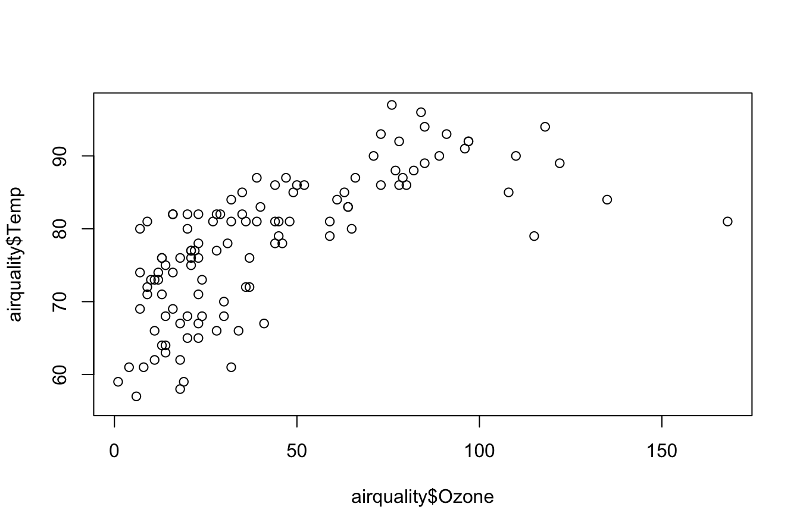
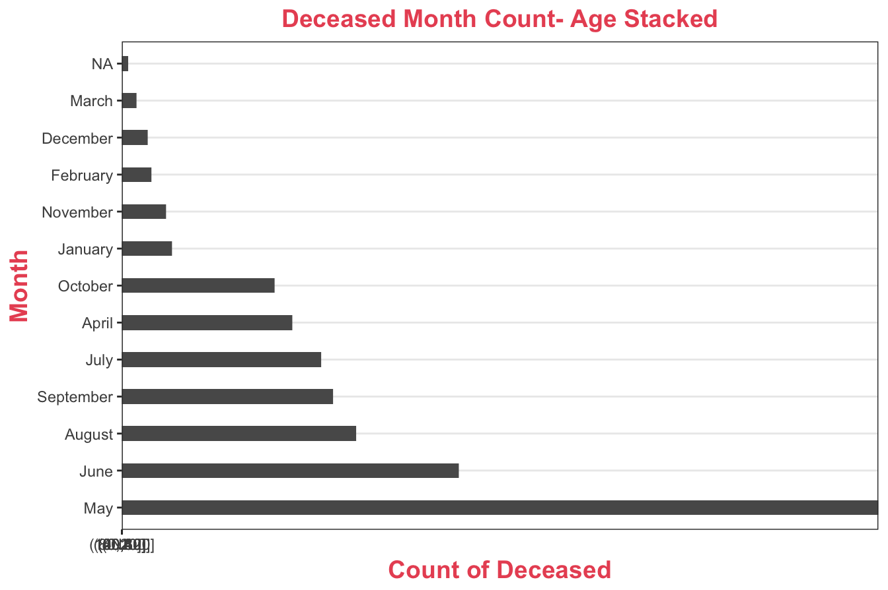

1.4 Factors and Levels in R
R categorical data Factors and Levels - used to plot categorical data in R
See the following packages in the book - R for Data Science - dplyr (https://r4ds.had.co.nz/transform.html#dplyr-basics) - forcats (https://r4ds.had.co.nz/factors.html#prerequisites-9)
Keys: How base-R handles categorical data or variables?
Categorical Variables - Qualitative variables ,i.e., those which cannot meaningfully be expressed in numbers. Eg.: Clothes, Colour. -> Base-R deals with them through the use of factors. -> factors are useful in Statistical Modeling and Plotting data.
-> Packages - tidyverse- dplyr, tidyr, forcats, readr help in dealing with factors.
factor(x)
- Store as vector of integers
- Displayed as characters
create a vector of data
store the vector as a factor using factor()
factorxc
#> [1] June July August September August July July
#> [8] August
#> Levels: August July June Septemberfactors in R are stored as a vector of integers but they correspond to a character string for display
Levels are the unique set of values taken by as.character() [this is the default assignment]
factor levels are always characters
xn - numeric data as factors
Create a vector of data
Store it as a factor using factor()
Note: factor levels are always characters
Both numeric and character data can be stored as factors
But, factor levels are always characters
mean(factorxn)
#> Warning in mean.default(factorxn): argument is not numeric or logical: returning
#> NA
#> [1] NASince, argument is not numeric, so will return NA
use levels() function to convert them to original numeric value
xc - character data as factors
xc <- c(
"June", "July", "August", "September",
"August", "July", "July", "August"
)
factorxc <- factor(xc)
factorxc
#> [1] June July August September August July July
#> [8] August
#> Levels: August July June Septembertable() gives frequency of each level
ordering is w.r.t. to as.character(.) and not related to the order in the vector.
months <- factor(xc,
levels = c(
"Garbage", "January", "February",
"March", "April", "May", "June", "July", "August",
"September", "October", "November", "December"
),
ordered = TRUE
)we can specify the levels and the order that we want
months
#> [1] June July August September August July July
#> [8] August
#> 13 Levels: Garbage < January < February < March < April < May < ... < DecemberHere, in our specification, levels contain elements not present in months
When factor is created, all it’s levels are stored with the factor
table(months)
#> months
#> Garbage January February March April May June July
#> 0 0 0 0 0 0 1 3
#> August September October November December
#> 3 1 0 0 0- table() will display ALL the levels specified and respective counts
- occur when subsetting a factor
factor(months)
#> [1] June July August September August July July
#> [8] August
#> Levels: June < July < August < Septemberretains only the levels present without affecting the ordering (i.e and maintains their order.)
Gives the count of ONLY the levels present in the factor
1.4.0.0.1
cut() function is used to convert a numeric variable into a factor Syntax: cut(numeric data, breaks)
breaks - arbitary by default - specifies how range of numbers will be converted to factor values
xfactor
#> [1] (548,755] (340,548] (755,964] (131,340] (340,548] (340,548] (131,340]
#> [8] (340,548] (755,964] (131,340]
#> Levels: (131,340] (340,548] (548,755] (755,964]
table(xfactor)
#> xfactor
#> (131,340] (340,548] (548,755] (755,964]
#> 3 4 1 2displays the count of each level that was created using cut()
label() - used to specify the levels of the factors
Nicer set of labels with pretty()
xpfactor <- cut(x, pretty(x, 4))
xpfactor
#> [1] (600,800] (200,400] (800,1e+03] (0,200] (200,400] (400,600]
#> [7] (0,200] (200,400] (800,1e+03] (0,200]
#> Levels: (0,200] (200,400] (400,600] (600,800] (800,1e+03]but may or may not provide more levels than specified
displays the count of each level created with pretty()
Produce factors based on percentiles of your data
observations are distributed “equally” in each level
Create factors from dates/times
strptime(), strftime() with factors and levels would be very useful for extracting information with ordering from a scraped dataset.
format() can be used to extract the month from each date using ‘%b’ Extract month from each day
table()
- tabulates values in each month
- ordering in alphabetcal
as.data.frame() stores the output as dataframe
changing the names of the variables of the dataframe d df
unique(): returns the unique values in the order that are encountered
stored months as factors
specified levels & ordering using the unique()
df2
#> Month Freq
#> 1 Jan 31
#> 2 Feb 28
#> 3 Mar 31
#> 4 Apr 30
#> 5 May 31
#> 6 Jun 30
#> 7 Jul 31
#> 8 Aug 31
#> 9 Sep 30
#> 10 Oct 31
#> 11 Nov 30
#> 12 Dec 31vector of all Dates of the year 2021
levels - 53 dates of each week of the year 2021
wks
#> [1] 2020-12-28 2020-12-28 2020-12-28 2021-01-04 2021-01-04 2021-01-04
#> [7] 2021-01-04 2021-01-04 2021-01-04 2021-01-04 2021-01-11 2021-01-11
#> [13] 2021-01-11 2021-01-11 2021-01-11 2021-01-11 2021-01-11 2021-01-18
#> [19] 2021-01-18 2021-01-18 2021-01-18 2021-01-18 2021-01-18 2021-01-18
#> [25] 2021-01-25 2021-01-25 2021-01-25 2021-01-25 2021-01-25 2021-01-25
#> [31] 2021-01-25 2021-02-01 2021-02-01 2021-02-01 2021-02-01 2021-02-01
#> [37] 2021-02-01 2021-02-01 2021-02-08 2021-02-08 2021-02-08 2021-02-08
#> [43] 2021-02-08 2021-02-08 2021-02-08 2021-02-15 2021-02-15 2021-02-15
#> [49] 2021-02-15 2021-02-15 2021-02-15 2021-02-15 2021-02-22 2021-02-22
#> [55] 2021-02-22 2021-02-22 2021-02-22 2021-02-22 2021-02-22 2021-03-01
#> [61] 2021-03-01 2021-03-01 2021-03-01 2021-03-01 2021-03-01 2021-03-01
#> [67] 2021-03-08 2021-03-08 2021-03-08 2021-03-08 2021-03-08 2021-03-08
#> [73] 2021-03-08 2021-03-15 2021-03-15 2021-03-15 2021-03-15 2021-03-15
#> [79] 2021-03-15 2021-03-15 2021-03-22 2021-03-22 2021-03-22 2021-03-22
#> [85] 2021-03-22 2021-03-22 2021-03-22 2021-03-29 2021-03-29 2021-03-29
#> [91] 2021-03-29 2021-03-29 2021-03-29 2021-03-29 2021-04-05 2021-04-05
#> [97] 2021-04-05 2021-04-05 2021-04-05 2021-04-05 2021-04-05 2021-04-12
#> [103] 2021-04-12 2021-04-12 2021-04-12 2021-04-12 2021-04-12 2021-04-12
#> [109] 2021-04-19 2021-04-19 2021-04-19 2021-04-19 2021-04-19 2021-04-19
#> [115] 2021-04-19 2021-04-26 2021-04-26 2021-04-26 2021-04-26 2021-04-26
#> [121] 2021-04-26 2021-04-26 2021-05-03 2021-05-03 2021-05-03 2021-05-03
#> [127] 2021-05-03 2021-05-03 2021-05-03 2021-05-10 2021-05-10 2021-05-10
#> [133] 2021-05-10 2021-05-10 2021-05-10 2021-05-10 2021-05-17 2021-05-17
#> [139] 2021-05-17 2021-05-17 2021-05-17 2021-05-17 2021-05-17 2021-05-24
#> [145] 2021-05-24 2021-05-24 2021-05-24 2021-05-24 2021-05-24 2021-05-24
#> [151] 2021-05-31 2021-05-31 2021-05-31 2021-05-31 2021-05-31 2021-05-31
#> [157] 2021-05-31 2021-06-07 2021-06-07 2021-06-07 2021-06-07 2021-06-07
#> [163] 2021-06-07 2021-06-07 2021-06-14 2021-06-14 2021-06-14 2021-06-14
#> [169] 2021-06-14 2021-06-14 2021-06-14 2021-06-21 2021-06-21 2021-06-21
#> [175] 2021-06-21 2021-06-21 2021-06-21 2021-06-21 2021-06-28 2021-06-28
#> [181] 2021-06-28 2021-06-28 2021-06-28 2021-06-28 2021-06-28 2021-07-05
#> [187] 2021-07-05 2021-07-05 2021-07-05 2021-07-05 2021-07-05 2021-07-05
#> [193] 2021-07-12 2021-07-12 2021-07-12 2021-07-12 2021-07-12 2021-07-12
#> [199] 2021-07-12 2021-07-19 2021-07-19 2021-07-19 2021-07-19 2021-07-19
#> [205] 2021-07-19 2021-07-19 2021-07-26 2021-07-26 2021-07-26 2021-07-26
#> [211] 2021-07-26 2021-07-26 2021-07-26 2021-08-02 2021-08-02 2021-08-02
#> [217] 2021-08-02 2021-08-02 2021-08-02 2021-08-02 2021-08-09 2021-08-09
#> [223] 2021-08-09 2021-08-09 2021-08-09 2021-08-09 2021-08-09 2021-08-16
#> [229] 2021-08-16 2021-08-16 2021-08-16 2021-08-16 2021-08-16 2021-08-16
#> [235] 2021-08-23 2021-08-23 2021-08-23 2021-08-23 2021-08-23 2021-08-23
#> [241] 2021-08-23 2021-08-30 2021-08-30 2021-08-30 2021-08-30 2021-08-30
#> [247] 2021-08-30 2021-08-30 2021-09-06 2021-09-06 2021-09-06 2021-09-06
#> [253] 2021-09-06 2021-09-06 2021-09-06 2021-09-13 2021-09-13 2021-09-13
#> [259] 2021-09-13 2021-09-13 2021-09-13 2021-09-13 2021-09-20 2021-09-20
#> [265] 2021-09-20 2021-09-20 2021-09-20 2021-09-20 2021-09-20 2021-09-27
#> [271] 2021-09-27 2021-09-27 2021-09-27 2021-09-27 2021-09-27 2021-09-27
#> [277] 2021-10-04 2021-10-04 2021-10-04 2021-10-04 2021-10-04 2021-10-04
#> [283] 2021-10-04 2021-10-11 2021-10-11 2021-10-11 2021-10-11 2021-10-11
#> [289] 2021-10-11 2021-10-11 2021-10-18 2021-10-18 2021-10-18 2021-10-18
#> [295] 2021-10-18 2021-10-18 2021-10-18 2021-10-25 2021-10-25 2021-10-25
#> [301] 2021-10-25 2021-10-25 2021-10-25 2021-10-25 2021-11-01 2021-11-01
#> [307] 2021-11-01 2021-11-01 2021-11-01 2021-11-01 2021-11-01 2021-11-08
#> [313] 2021-11-08 2021-11-08 2021-11-08 2021-11-08 2021-11-08 2021-11-08
#> [319] 2021-11-15 2021-11-15 2021-11-15 2021-11-15 2021-11-15 2021-11-15
#> [325] 2021-11-15 2021-11-22 2021-11-22 2021-11-22 2021-11-22 2021-11-22
#> [331] 2021-11-22 2021-11-22 2021-11-29 2021-11-29 2021-11-29 2021-11-29
#> [337] 2021-11-29 2021-11-29 2021-11-29 2021-12-06 2021-12-06 2021-12-06
#> [343] 2021-12-06 2021-12-06 2021-12-06 2021-12-06 2021-12-13 2021-12-13
#> [349] 2021-12-13 2021-12-13 2021-12-13 2021-12-13 2021-12-13 2021-12-20
#> [355] 2021-12-20 2021-12-20 2021-12-20 2021-12-20 2021-12-20 2021-12-20
#> [361] 2021-12-27 2021-12-27 2021-12-27 2021-12-27 2021-12-27
#> 53 Levels: 2020-12-28 2021-01-04 2021-01-11 2021-01-18 ... 2021-12-27decdf <- read.csv(
file = "https://www.isibang.ac.in/~athreya/Teaching/ISCD/Master.csv",
header = TRUE
)This is the deceased data from the Government of Karnataka COVID-19 Bulletin. The https://www.isibang.ac.in/~athreya/Teaching/ISCD/Master.csv file contains this collation.
Use months() to extract months of reporting date
Use table() to compute reported cases across months change names of dataframe
data
#> name val
#> 1 April 2974
#> 2 August 4108
#> 3 December 430
#> 4 February 483
#> 5 January 843
#> 6 July 3561
#> 7 June 6049
#> 8 March 239
#> 9 May 13599
#> 10 November 737
#> 11 October 2593
#> 12 September 3643ggplot(data = data, aes(x = name, y = val, fill = name)) +
geom_bar(stat = "identity", alpha = .6, width = .4) +
coord_flip() +
scale_fill_viridis_d() +
xlab("") +
theme_bw() Note:
-
Note:
- ggplot uses ordering alphabetically
- treats Month as factor and default level ordering
try to plot below in order of frequency values.
decdf <- read.csv(
file = "https://www.isibang.ac.in/~athreya/Teaching/ISCD/Master.csv",
header = TRUE
)
decdf$Month <- months(as.Date(decdf$MB.Date))
data <- as.data.frame(table(decdf$Month))
names(data) <- c("name", "val")create data frame
Note: We arranged our dataframe to preferred ordering.
ggplot(data = data, aes(x = name, y = val, fill = name)) +
geom_bar(stat = "identity", alpha = .6, width = .4) +
scale_fill_viridis_d() +
coord_flip() +
xlab("") +
theme_bw()
ggplot() takes into account ordering from the factor given by its levels
& NOT as we see in the data-frame
Inspite of arranging our dataframe, the plot is still the same as before!
Same code as before - some correction to get required result try to plot below in order of frequency values.
library(tidyverse)
decdf <- read.csv(
file = "https://www.isibang.ac.in/~athreya/Teaching/ISCD/Master.csv",
header = TRUE
)
decdf$Month <- months(as.Date(decdf$MB.Date))
data <- as.data.frame(table(decdf$Month))
names(data) <- c("name", "val")
data <- arrange(data, val)
data$name <- factor(data$name, levels = data$name)Reorder the levels according to the values
ggplot(data = data, aes(x = name, y = val, fill = name)) +
geom_bar(stat = "identity", alpha = .6, width = .4) +
coord_flip() +
scale_fill_viridis_d() +
xlab("") +
theme_bw()
ggplot() obliges the order now
using dplyr and forcats
decdf <- read.csv(
file = "https://www.isibang.ac.in/~athreya/Teaching/ISCD/Master.csv",
header = TRUE
)
decdf$Month <- months(as.Date(decdf$MB.Date))create data frame
library(tidyverse)
ggplot(
data = decdf,
mapping = aes(
x = fct_infreq(Month),
fill = cut(Age.In.Years, pretty(Age.In.Years, 4))
)
) +
geom_bar(stat = "count", alpha = .6, width = .4) +
scale_fill_viridis_d() +
xlab("") +
coord_flip() +
theme_bw() With dplyr(R package): Order months according to reported deaths
With forcats(R package):
With dplyr(R package): Order months according to reported deaths
With forcats(R package): fct_infreq
library(dplyr)
library(forcats)
ggplot(
data = decdf,
mapping = aes(
x = fct_infreq(Month),
y = cut(Age.In.Years, pretty(Age.In.Years, 4))
# cut() is used to add Age.In.Years bin layer
)
) +
geom_bar(stat = "identity", width = .4) +
labs(fill = "Age") +
scale_fill_viridis_d() +
coord_flip() +
ggtitle("Deceased Month Count- Age Stacked") +
ylab("Count of Deceased") +
xlab("Month") +
theme_bw() +
theme(
plot.title = element_text(
color = "#e95462",
size = 14,
face = "bold",
hjust = 0.5
),
axis.title.x = element_text(
color = "#e95462",
size = 14, vjust = 0.5, face = "bold"
),
axis.title.y = element_text(
color = "#e95462",
size = 14, face = "bold"
)
) forcats used to create ordered factors. fill command used to add age as layer. labeling of axis, title and ticks discussed above. check other themes in ggplot cut() from base R was used to add Age bin layer Viridis hexcodes from https://waldyrious.net/viridis-palette-generator/